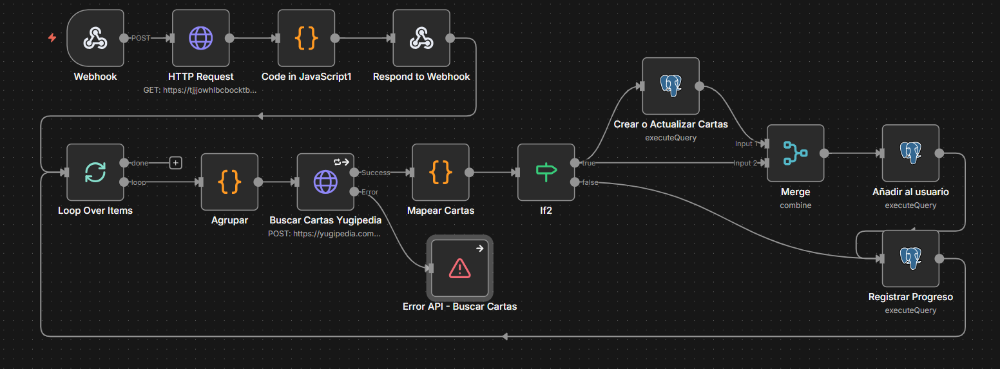
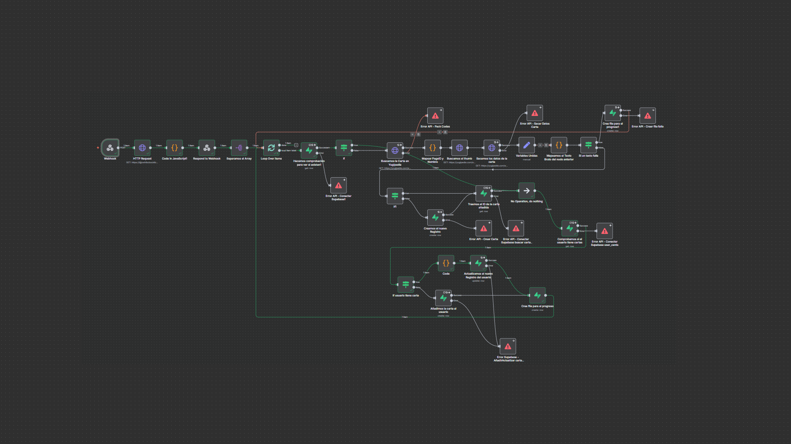
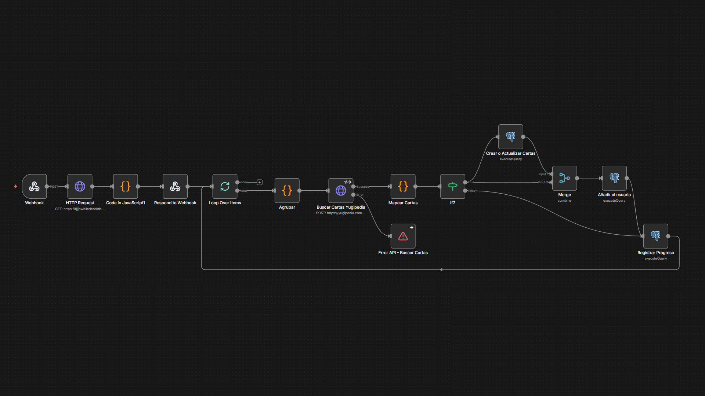

Automatización · n8n

El sistema de automatización de YugiDex es el núcleo que conecta la app móvil, la aplicación web y la base de datos. En él se gestionan todos los procesos relacionados con el escaneo y registro de cartas. La primera versión del flujo funcionaba correctamente, pero era extensa y poco eficiente. Decidí rediseñarla desde cero, aplicando principios de modularización, reutilización de tareas y optimización de API Calls. El resultado es una versión más clara, rápida y escalable, que sigo mejorando activamente para que crezca al ritmo del proyecto.

Versión inicial del flujo de trabajo

Flujo optimizado y mejorado
Desde la app móvil (Flutter) mediante Webhooks.
Lectura del código de carta (OCR local en la app) y validación del payload.
Consulta de datos oficiales de las cartas.
Inserción automática en base de datos PostgreSQL.
Sub-flujos independientes reutilizables.
Manejo avanzado de errores y notificaciones automáticas.
Limpieza de datos e imágenes antes de guardar.
Control de seguridad mediante secret keys.
Reducción de nodos y de coste de ejecución.
Flujos principales, sub-flujos, manejo de webhooks.
Almacenamiento estructurado de datos.
Consulta de datos oficiales de las cartas.
App móvil que envía el código OCR.
CRM / panel web de administración.
Servidor donde se ejecuta n8n.
Hosting de la aplicación web.
Control de versiones del código.